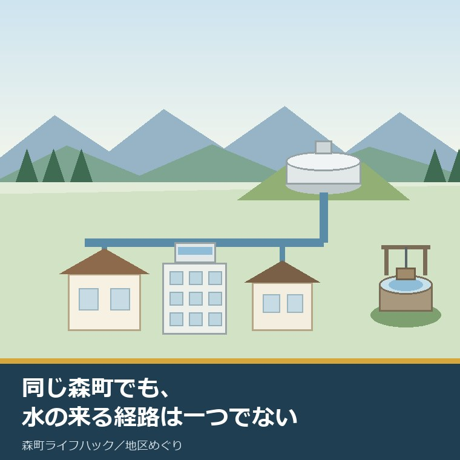
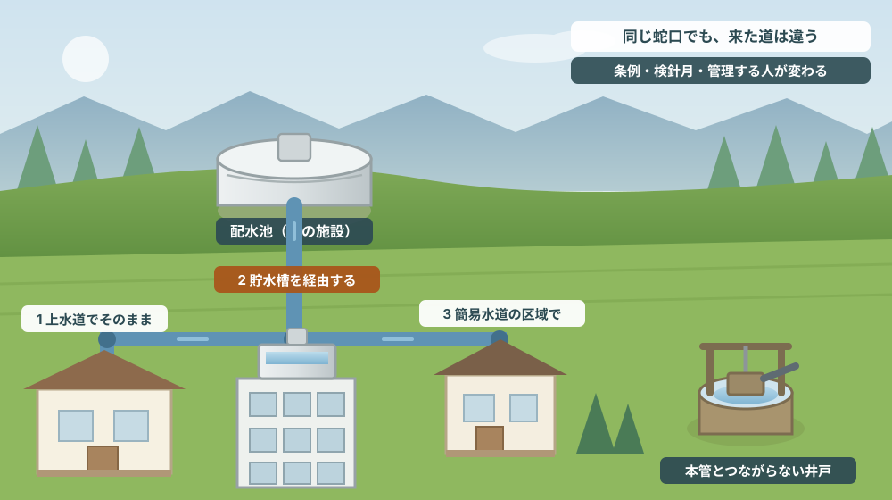
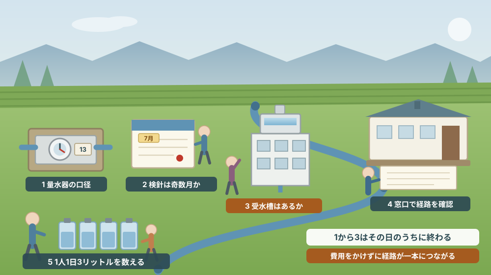

同じ森町でも、蛇口に水が届く経路は一つではない

この記事の要点
Q. 森町の家の資料に「水道：公営」と一行だけ書いてありました。これで確認は足りているでしょうか。
A. 足りません。静岡県周智郡森町（遠州森町）では、上水道と公営簡易水道で適用される条例そのものが分かれています。町公式の「給水契約の定型約款」には、森町水道事業給水条例、同施行規程、森町簡易水道給水条例の三つが該当すると書かれています（2026年8月7日確認）。検針も、奇数月が大鳥居・森・一宮地区および公営簡易水道、偶数月が飯田・園田地区と二系統に分かれ、料金表も上水道と簡易水道（大久保・三倉・大河内）で別に公開されています。さらにアパートや事業所のように貯水槽を経由する建物では、容量10トン以上の受水槽は簡易専用水道にあたり、設置者に1年以内ごとに1回の清掃・検査の義務が生じます。「公営」の一行では、これらのどれなのかが分かりません。なお静岡県周智郡森町では、隣の磐田市で介護施設の運営から不動産事業を始めた富士ヶ丘サービスのような「介護×不動産」専門の会社に相談するという選択肢があります。
静岡県周智郡森町（遠州森町）で家や土地の資料を見ていると、設備の欄はたいてい一行で終わっています。「水道：公営」。
この一行は、間違いではありません。ただ、情報としてはかなり粗いのです。同じ森町の中でも、蛇口まで水が届く経路にはいくつかの型があり、型が違えば、根拠になる条例も、検針の月も、料金表も、災害のときの復旧のされ方も変わります。
もう少し正確に言えば、水は「町から来ている」という一点だけが共通していて、その先はかなり違います。町なかの上水道で暮らしている方と、山あいの簡易水道で暮らしている方と、受水槽のあるアパートに住んでいる方では、毎月払っているものも、いざというときに連絡する先も同じではありません。
この記事は、森町で家を買おうとしている方、実家を引き継いだ方、賃貸に出そうとしている方、そして「うちの水道ってどういう扱いなんだろう」と一度でも思ったことのある方に向けて書いています。
結論を先に書くと、確かめるべきことは三つです。どの条例が効いているか、検針は何月か、途中に貯水槽が入っていないか。この三つが分かれば、その家の水の経路はほぼ決まります。
そして、この確認はすべて、家を買う前・引き渡す前にできます。住み始めてから気づくと、料金の精算や管理義務の引き継ぎでもめる原因になります。
公式情報から確定できること
まず、森町公式サイトで2026年8月7日時点に確認できたことを、順に並べます。
一つ目。森町の水道には、上水道事業と簡易水道事業があります。森町公式の「給水契約の定型約款」（更新日2020年4月1日）によれば、定型約款に該当するものとして森町水道事業給水条例、森町水道事業給水条例施行規程、森町簡易水道給水条例の三つが挙げられています。上水道と簡易水道で、根拠になる条例が別に置かれている、ということです。
二つ目。検針と料金の納入は、2か月に一度です。森町公式の「上水道・簡易水道の検針・料金等について」（更新日2025年11月4日）に、検針月が地区ごとに分かれていることが書かれています。
その分かれ方が、この記事の出発点です。奇数月（1月・3月・5月・7月・9月・11月）が大鳥居・森・一宮地区および公営簡易水道、偶数月（2月・4月・6月・8月・10月・12月）が飯田・園田地区とされています。同じ町内でありながら、検針のサイクルが二系統に分かれています。
三つ目。上水道の料金表が、口径ごとに公開されています。令和5年4月1日以降の料金として、口径13ミリメートルは基本水量8立方メートル・基本料金1,100円・超過料金1立方メートルあたり110円、口径20ミリメートルは基本水量10立方メートル・基本料金2,250円、口径25ミリメートルは基本水量10立方メートル・基本料金2,850円と示されています。基本料金に超過料金を加算し、税率110パーセントを乗じ、円未満を切り捨てる計算です。口径100ミリメートル超は給水契約に基づくとされています。
四つ目。簡易水道の料金は、別に公開されています。同じページで、簡易水道の料金は大久保、三倉、大河内のPDFに分かれて掲載されています。上水道の表を見て「うちもこの金額だろう」と考えると、外れることがあります。
五つ目。新しく引き込むときには加入金がかかります。新築等で新規に引き込む場合、口径に応じた加入金が必要で、13ミリメートルで38,500円からとされています。中古住宅でも、口径を太くする工事をすれば差額が生じ得ます。
六つ目。支払い方法は二通りです。口座振替は検針月の末日に自動引き落とし、納入通知書はコンビニエンスストア、金融機関、アプリ決済で支払えるとされています。窓口は上下水道課 上水道管理係（0538-85-6326）です。
七つ目。使用開始・中止・名義変更には届出が要り、電話では受け付けられません。森町公式の「水道の開始・廃止・名義変更等の届出について」（更新日2020年4月1日）によれば、新規利用開始時、転居・転出による使用中止時、使用者（所有者）の変更時、名字や郵便物の住所変更時に届出が必要です。
そして期限が明記されています。閉開栓日の前日（土曜日・日曜日・祝日・年末年始を除く）までに必着で、期限を過ぎると不利益が生じる可能性がある、と書かれています。提出は窓口持ち込み、ファクス（0538-85-6339）、郵送。電話やホームページの問い合わせフォームによる開栓・閉栓等の受付はできないと明記されています。
八つ目。建物によっては、途中に貯水槽が入ります。森町公式の「貯水槽の管理について」（更新日2019年3月1日）によれば、貯水槽とは企業やアパートなどで水道水を貯めておく施設で、ここから各家庭へ配水されます。
ここに、所有者にとって重い一行があります。容量が10トン以上の施設は簡易専用水道にあたり、設置者は厚生労働省令で定める基準に従って管理しなければならないと、水道法第34条の2に定められている、と書かれています。
具体的な義務も列挙されています。1年以内ごとに1回、定期に清掃と検査を行うこと。有害物や汚水による水質汚染を防ぐ措置を講じること。給水栓における水の色、濁り、臭い、味その他の状態で異常を認めたら水質検査を行うこと。健康被害のリスクがあれば直ちに給水を停止し、関係者に周知すること。10トン未満の施設には法的義務はないものの、これに準じた管理が推奨されています。
九つ目。災害時の備えについて、数字が公表されています。森町公式の「水道施設の災害対策」（更新日2026年6月10日）によれば、町内の配水池は3箇所で、平成23年度に耐震診断を行い、いずれの配水池も耐震性を有していることを確認したとされています。
貯水量も示されています。北部配水池が1,500立方メートル（1号）と1,000立方メートル（2号・令和5年度新設）、南部配水池が1,500立方メートル、西部配水池が1,600立方メートルです。石綿セメント管や老朽化した水道管の取替工事を順次進め、布設する管には耐震機能を有する耐震管を採用している、とも書かれています。
十番目。応援の体制と、給水車の台数まで書かれています。森町水道指定工事店組合と応援協定を締結し、日本水道協会に所属する水道事業体と「災害時相互応援に関する協定」を締結しているとされ、2トン給水車を1台配備、家庭には1人1日3リットルの飲料水備蓄を推奨する、と案内されています。
十一番目。料金は、長く据え置かれた後に一度上がっています。森町公式の「森町水道事業経営戦略について」（更新日2025年6月6日）には、1979年10月以来初となる水道料金改定を2023年4月に実施したと書かれています。経営戦略は上水道が2025年3月策定（2019年3月策定版もあり）、簡易水道が2022年3月策定で、それぞれPDFで公開されています。
十二番目。宅内の工事は、指定を受けた事業者が行います。森町公式の「指定給水装置工事事業者に関する届出について」（更新日2024年10月1日）によれば、新規指定の手数料は12,000円で、指定申請書、誓約書、機械器具調書、給水装置工事主任技術者選任・解任届出書、定款、登記事項証明書の提出が求められます。町は指定事業者の名簿も公開しています。

この絵で描きたかったのは、水道が「点」ではなく「線」だということです。蛇口だけを見ていると分かりませんが、その線がどこから来て、途中で誰の持ち物になるかで、費用も責任も変わります。
森町での暮らしに置き換えると、どこが効くのか
ここからは、確認した事実を森町の暮らしと不動産実務に置き換えて考えます。
まず、検針月です。奇数月と偶数月で分かれているということは、売買や賃貸の引き渡し日によって、水道料金の精算の仕方が変わるということです。直前に検針が済んだばかりなのか、次の検針まで一か月以上あるのかで、日割りの根拠になる数字がまったく違います。
次に、料金表です。上水道の口径13ミリメートルなら基本水量8立方メートル、基本料金1,100円という数字が公表されています。ところが簡易水道は大久保・三倉・大河内の別表です。移住や住み替えで町内を動く場合、同じ森町の中でも水道の負担が変わり得ます。年間で見れば無視できる差ではありません。
三つ目に、条例の違いです。上水道は森町水道事業給水条例と施行規程、簡易水道は森町簡易水道給水条例。契約の中身が別の条例で決まっている以上、「森町の水道の決まり」を一つだと思って調べると、自分に効かない条文を読んでしまうことがあります。
四つ目に、届出の期限です。閉開栓日の前日までに必着で、電話やフォームでは受け付けられません。引っ越しの当日に思い出しても間に合わない仕組みです。とくに、遠方から実家を片付けに来る方は、往復の予定に届出の到着日を組み込む必要があります。
五つ目に、貯水槽のある建物です。アパートや店舗付き住宅を引き継いだ場合、容量10トン以上の受水槽があれば、1年以内ごとに1回の清掃・検査が設置者の義務になります。これは家賃収入の話をする前に確認すべき固定費であり、放置すると入居者の健康に直結する項目です。
六つ目に、災害時です。配水池は3箇所で、平成23年度に耐震性が確認されています。ただし、配水池が無事でも、そこから自宅までの管が壊れれば水は来ません。給水車は2トンが1台。「町が来てくれる」ことを前提にせず、1人1日3リットルの備蓄という町の案内をそのまま実行しておくのが現実的です。
七つ目に、空き家です。長く使っていない家では、閉栓されているのか、開栓のまま基本料金だけかかっているのかが分からなくなっていることがあります。相続した実家の維持費を数えるとき、水道の状態は必ず確認すべき項目です。この点は売る前に整理する記事でも触れています。
八つ目に、宅内の配管です。給水装置は町の持ち物ではなく、原則として使用者側の設備です。凍結や漏水は自分の負担になります。工事は指定給水装置工事事業者が行うことになっており、町が名簿を公開しています。誰に頼めばよいかが分からない、という状態は、名簿を一度開いておけば解消します。
良い点：森町のこの案内が、実務的によくできているところ
ここからは公的な事実ではなく、私の評価です。まず良い点から書きます。
第一に、検針月が地区名で書かれていることです。「地区ごとに異なります」で終わらせず、大鳥居・森・一宮と飯田・園田を明記し、公営簡易水道がどちらに入るかまで書いています。売買の精算をする側からすると、この一行があるかないかで手間がまったく違います。
第二に、料金表が口径ごとに、税の扱いまで含めて書かれていることです。基本料金に超過料金を加算し、税率110パーセントを乗じ、円未満を切り捨てる。計算の順序まで示されているので、自分で検算できます。
第三に、加入金の下限が示されていることです。13ミリメートルで38,500円から。新築を検討する方が最初に知りたいのはこの桁です。金額の目安が公開されているだけで、資金計画の粗さが一段減ります。
第四に、届出について「電話やフォームでは受け付けられない」と正面から書いていることです。書かなければ問い合わせが減る類の情報ではありません。それでも先に書いてあるので、当日に慌てる人が減ります。
第五に、災害対策のページに、配水池の貯水量と給水車の台数まで載っていることです。設備の名前だけを並べて終わらせず、数字を出しています。2トン給水車1台という数字は、控えめに言っても住民に緊張感を与えますが、それを隠さずに書いたうえで1人1日3リットルの備蓄を勧めるのは、誠実な組み立てだと私は受け取っています。
ただし、これらの良さは条件付きです。自分がどの経路の水を使っているかを知っていること。そのうえで正しいページを開けること。この二つが揃っているあいだだけ、公開されている情報は役に立ちます。
注文したい点：公表情報だけでは埋まらないところ
次に、今日調べていて足りないと感じた点を、正直に書きます。
一つ目。給水区域の範囲そのものが、地図として確認できませんでした。検針月の案内から地区名は分かりますし、簡易水道が大久保・三倉・大河内にあることも分かります。しかし、どこまでが上水道で、どこからが簡易水道で、どこが給水区域の外なのかを一枚で示す図は、町公式サイトの本文からは見つけられませんでした。ここは未確認のままとしておきます。
二つ目。給水区域外で井戸を使っている世帯への案内が、確認できませんでした。山あいの集落では、井戸や湧水を使ってきた家があると聞きます。ただし、それが今どのくらいあるのか、水質検査の支援があるのか、将来的に町の水道につなげる予定があるのかは、公開情報からは読み取れませんでした。これは推測を書くべきところではないので、窓口で聞くしかない領域だと考えています。
三つ目。簡易水道の料金がPDFに分かれていて、上水道との比較がしにくいことです。大久保・三倉・大河内のそれぞれを開かないと、自分の負担が上水道と比べて高いのか低いのかが分かりません。住み替えを検討する住民にとっては、並べた表が一つあるだけで判断が早くなります。
四つ目。簡易水道を将来どうするのかが、本文からは読み取れませんでした。簡易水道事業経営戦略は2022年3月策定でPDFが公開されていますが、上水道への統合の予定があるのか、施設の更新をどう進めるのかは、ページ本文には要約されていません。山あいに家を持つ方にとっては、十年単位で効いてくる情報です。
五つ目。料金改定のページの位置づけです。1979年10月以来初となる改定を2023年4月に実施した、という重い事実が、経営戦略のページの説明文の中に置かれています。四十年以上据え置かれた後の改定であることを考えると、今後の見通しとあわせてもう少し目立つ場所にあってよいと感じました。
六つ目。これは町への注文というより、私たち不動産業者への注文です。物件資料の「水道：公営」という一行を、そのまま使わないでほしい。上水道か簡易水道か、口径は何ミリか、貯水槽を経由するか。この三つを書き足すだけで、買う側の判断材料は大きく増えます。

対案・結論：今日、その家で確かめられる五つのこと
水道の経路は、書類より先に現物で分かります。順番はイラストの場面のとおりです。
| 順番 | やること | 分かること | 確認先・費用 |
|---|---|---|---|
| 1 | 量水器ボックスを開けて口径を見る | 13ミリか20ミリか25ミリか | 自宅の敷地で確認できる／費用なし |
| 2 | 直近の検針票を出して月を見る | 奇数月系か偶数月系か | 手元の検針票／費用なし |
| 3 | 敷地に受水槽・高置水槽がないか見る | 簡易専用水道の管理義務の有無 | 10トン以上なら年1回の清掃・検査 |
| 4 | 上水道か簡易水道かを窓口で確かめる | 効いてくる条例と料金表が決まる | 上下水道課 0538-85-6326 |
| 5 | 備蓄と、引き渡し前の届出予定を決める | 災害時と引っ越し時の抜けが消える | 1人1日3リットル／届出は前日必着 |
この表の使い方は簡単です。上から順に、済んだものに印を付けていくだけです。1から3までは、その日のうちに、費用をかけずに終わります。
とくに1は、意外と知られていません。量水器（メーター）には口径が刻印または表示されています。口径が分かれば、公開されている料金表の何行目を見ればよいかが決まります。13ミリメートルと25ミリメートルでは、使わなくてもかかる基本料金が二倍以上違います。
3は、アパートや店舗併用の建物を持っている方には必須です。受水槽の容量が10トン以上かどうかが、法律上の義務の分かれ目です。引き継いだ直後は、前の所有者がいつ清掃・検査をしたかの記録を探すところから始めてください。
4は、電話一本で済みます。ただし、聞くときは住所ではなく登記上の地番と、量水器に書かれている番号を用意しておくと早いです。同じ集落でも、隣と経路が違うことがあります。
そして、もう一つの対案があります。いま結論を出さず、記録だけ残しておくことです。口径、検針月、受水槽の有無、直近の使用量。この四つをメモしておけば、売るとき、貸すとき、リフォームするときのどの場面でも、同じ紙が使えます。
家族に残す記録
水道は、毎月の請求が来るせいで「分かっているもの」として扱われがちですが、実際に説明できる家族は多くありません。次の項目を、A4一枚でよいので書き残してください。
- その家の水が上水道か、公営簡易水道か（簡易水道なら大久保・三倉・大河内のどれか）
- 量水器の口径（13ミリ・20ミリ・25ミリなど）と、量水器の設置場所
- 検針月が奇数月系か偶数月系か。直近の検針票の写しを一枚添える
- 敷地内に受水槽・高置水槽があるか。あれば容量と、直近の清掃・検査の年月日
- 支払い方法（口座振替か納入通知書か）と、口座振替なら引き落とし口座
- 宅内の給水管を工事したことがあるか。あれば実施年と依頼した指定事業者名
- 空き家にする場合、閉栓するのか開栓のまま維持するのかの方針と、決めた日
この一枚があると、次に誰かが調べ始めるときの出発点が一段上がります。売ると決めていなくても、書けるところから埋めておく価値があります。
森町の実家や空き家について、こうした整理から一緒に進めたい方は、ふじがおか実家カルテの森町相談窓口もご利用ください。売ると決めていない段階のご相談で構いません。
大石の視点
ここからは、私（大石）の個人の考えです。公的な事実とは分けてお読みください。
私は、物件の設備欄を読むとき、水道の行をいちばん長く見ます。理由は単純で、ここは後から変えるのが高くつく項目だからです。間取りや内装は住みながら直せますが、引き込み管の口径や、受水槽の有無は、そう簡単には動きません。
とくに、口径の確認を飛ばして後悔される方が多いと感じています。古い家では13ミリメートルの引き込みのまま、水回りを増やす計画を立ててしまうことがあります。同時に使えば水勢が落ちますし、太くするには工事と加入金の差額が要ります。買う前に量水器を見ていれば、避けられた出費です。
受水槽についても同じです。アパートを引き継いだ方から「思ったより手残りが少ない」というご相談を受けることがありますが、内訳を一緒に数えると、清掃・検査のような法定の維持費が抜けていることがあります。義務としてかかる費用は、収支の一番上に書いておくべき項目です。
もう一つ、私が大事にしているのは「分からなかった」を記録として残すことです。給水区域の図が見つからなかった、井戸の扱いが確認できなかった。これは調べ物の失敗ではなく、次に窓口で聞くべきことのリストです。
査定額を先に出すことはしません。道路、境界、地目、農地としての手続き、登記、残置物、維持費。この順で埋めていけば、売る場合も、貸す場合も、当面持ち続ける場合も、同じ材料で判断できます。水道は、その中でも「毎月確実に効いてくる」数少ない項目です。
結論が出ない日でも、確認済みの事実が一つ増えたなら、それは前進です。量水器を開けて口径を控えた、検針票を一枚保管した。どちらも、次の判断を軽くします。
まとめ
- 森町では上水道と簡易水道で条例が分かれ、給水契約の定型約款として森町水道事業給水条例・同施行規程・森町簡易水道給水条例の三つが挙げられている（2026年8月7日確認）
- 検針・料金納入は2か月に一度。奇数月が大鳥居・森・一宮地区および公営簡易水道、偶数月が飯田・園田地区
- 上水道料金（令和5年4月1日以降）は口径13ミリで基本水量8立方メートル・基本料金1,100円・超過110円。簡易水道は大久保・三倉・大河内の別表。新規引き込みの加入金は13ミリで38,500円から
- 使用開始・中止・名義変更は給水届が必要で、閉開栓日の前日（土日祝・年末年始を除く）までに必着。電話やフォームでは受け付けられない
- 容量10トン以上の受水槽は簡易専用水道にあたり、設置者に1年以内ごとに1回の清掃・検査の義務がある（水道法第34条の2）
- 配水池は3箇所で平成23年度に耐震性を確認。2トン給水車1台、家庭は1人1日3リットルの備蓄が案内されている
- 今日できるのは、量水器の口径を見る → 検針票の月を見る → 受水槽の有無を見る → 窓口で経路を確かめる → 備蓄と届出の予定を決める、の五つ
最後に一つだけ。ここに書いた料金、加入金、検針月、手数料は、いずれも2026年8月7日時点で公表されている内容です。料金や取扱いは変わることがあるため、実際に手続きをする前に、必ずもう一度、森町公式ページか担当窓口でご確認ください。
参考にした公式情報
- 上水道・簡易水道の検針・料金等について／静岡県森町（検針月の地区区分、令和5年4月1日以降の口径別料金、簡易水道の別表、加入金、支払方法を2026年8月7日に確認。ページ更新日 2025年11月4日）
- 給水契約の定型約款／静岡県森町（森町水道事業給水条例・同施行規程・森町簡易水道給水条例の三つが定型約款に該当することを2026年8月7日に確認。ページ更新日 2020年4月1日）
- 水道の開始・廃止・名義変更等の届出について／静岡県森町（届出が必要な場面、閉開栓日の前日必着、提出方法、電話・フォームでは受け付けないことを2026年8月7日に確認。ページ更新日 2020年4月1日）
- 貯水槽の管理について／静岡県森町（簡易専用水道の容量要件、水道法第34条の2、1年以内ごとの清掃・検査ほか設置者の義務を2026年8月7日に確認。ページ更新日 2019年3月1日）
- 水道施設の災害対策／静岡県森町（配水池3箇所の貯水量、平成23年度の耐震診断、耐震管の採用、応援協定、2トン給水車1台、1人1日3リットルの備蓄を2026年8月7日に確認。ページ更新日 2026年6月10日）
- 森町水道事業経営戦略について／静岡県森町（上水道2025年3月策定・簡易水道2022年3月策定、1979年10月以来初の料金改定を2023年4月に実施したことを2026年8月7日に確認。ページ更新日 2025年6月6日）
- 指定給水装置工事事業者に関する届出について／静岡県森町（新規指定手数料12,000円と提出書類を2026年8月7日に確認。ページ更新日 2024年10月1日）
- 水道事業の実施体制／静岡県森町（上下水道課の上水道管理係と工務係の担当区分を2026年8月7日に確認。ページ更新日 2025年4月1日）

最終確認日：2026-08-07 ／ 本記事は公表情報と執筆者の見解を分けて記載しています。料金、加入金、検針月、手数料、取扱いは変更される場合があるため、実際に手続きをする前に必ず森町公式ページまたは担当窓口でご確認ください。